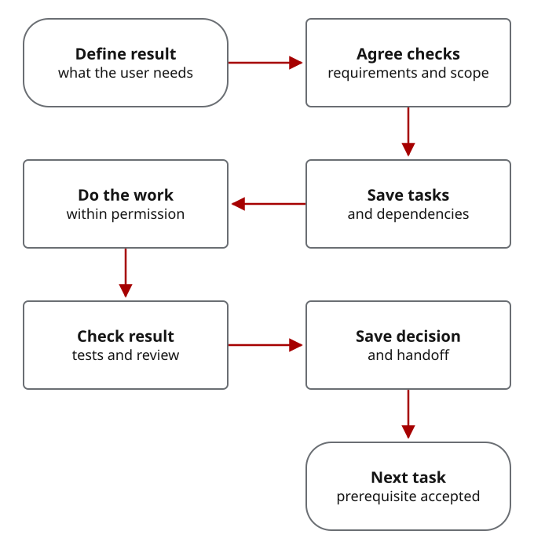

A project record is not a longer memory
CWO makes project state explicit: what is required, what depends on it, what was checked, who accepted it, and what the next session may do. It cannot recover a decision that was never recorded.
A model generates reasoning and responses. An agent client/runtime gives it tools and permissions. A skill supplies reusable instructions and helpers. CWO combines a skill, a named operator contract, durable task records, execution controls, and acceptance/recovery procedures. The underlying client and operating system still own tool access.
Some browser agents can act on projects and some terminals only display text. Interface shape alone does not establish capabilities or safety. The canonical beginner route here uses a working Codex CLI because that is the exercised path.
Beyond subagents, Beads, or a better instruction file
- Native agent features
- The agent may already plan, use tools, run tests, compact context, and delegate. CWO specifies how assignments are bounded and results accepted; it does not invent tool use. See the current official subagent documentation.
- Beads alone
- Beads stores tasks and dependencies. CWO adds acceptance criteria, evidence discipline, review/owner decisions and recovery procedures around those records. You still have to write meaningful records and configure backups/remotes if wanted.
- AGENTS.md alone
- A good instruction file can direct behavior. CWO also ships schemas, validators and supervised native execution components for supported routes. Text instructions do not acquire the enforcement power of those components merely by naming them.
How a task becomes accepted work

One authorized main-thread maintenance task can stay small. When native work is delegated, precommit, qualification, exact identity, tool scope, workspace, budget and supervised lifecycle controls apply. More workers and more process are not default measures of quality.
Instructions versus executable controls
CWO uses a system prompt optimized for complex project work rather than the default OpenAI system prompt. It directs acceptance closure, temporal ordering, protocol fidelity, scope and handoff discipline. Deterministic components validate packets, model/attempt bindings, worktree ownership, budgets and terminal results on supported native routes. Real sandbox/network/tool isolation must be established by the host. Removing a patch tool or asking for read-only behavior is not a filesystem boundary.
No schema, renderer or capability flag proves a live integration. A qualified run proves only its named model, host, source image, scope and lifetime. Maturity and supervision · CWO system prompt and activation.
Local, provider, and external sharing boundaries
Project files and Beads may be local while your agent sends selected context to its configured provider. Tool access can expose more than the final answer. Review the client's permissions and provider handling before adding sensitive material.
CWO defaults to no additional outside contractor sharing. External review requires an authorized share boundary, minimized packet, provider binding and evaluation; local inference is a separate explicit path, not a claim that ordinary cloud sessions are offline. External review · Local-model options · Security policy.
The honest tradeoff
You gain an inspectable continuation, not perfect memory. You gain bounded supported routes, not universal model access. You gain explicit validation, not a proof that every failure was considered. Setup, records, qualification, review and context replay consume time and quota.
Use the least machinery that can establish acceptance. Try a first project, inspect the evidence exercises, or choose an operator route.